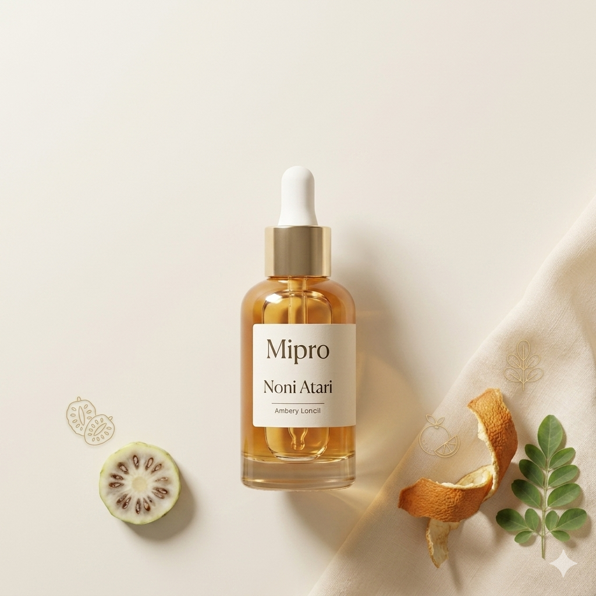

Antioxidant support
Noni seed oil ondersteunt een gevoede, verzorgde huiduitstraling.
Luxe botanische voeding voor de gevoelige huid. Noni Atara is een lichte, snel absorberende gezichtsolie met noni seed oil en citrus peel extract voor een natuurlijke, gezonde glow.
Gemaakt om je huid zacht te laten aanvoelen, een natuurlijke glow te geven en je skincare routine mooi af te sluiten.

Een cold-pressed botanische gezichtsolie voor huid die droog, gevoelig, dof of vermoeid aanvoelt. Gebruik 1–2 druppels als laatste stap in je ochtend- of avondroutine.
Een face oil hoort je huid te voeden, je routine af te sluiten en comfortabel aan te voelen — niet vettig of overweldigend.
Noni seed oil ondersteunt een gevoede, verzorgde huiduitstraling.
Citrus peel extract helpt de huid frisser en stralender te laten ogen.
De lichte textuur trekt snel in en laat geen zwaar, vet gevoel achter.
Geen fillers en geen synthetische geurstoffen in de positionering.

Noni Atara is ontworpen voor mensen die een voedende gezichtsolie willen zonder een zware, glimmende of synthetische finish.
Gebruik Noni Atara na reinigen, toner, serum en moisturizer. Face oil werkt het best als afsluitende stap van je routine.
Bestel je flesjeDuidelijke verwachtingen zorgen voor meer vertrouwen en een betere skincare ervaring.
Voeg hier echte geverifieerde reviews toe zodra klantfeedback beschikbaar is.
“Mijn huid voelt zachter zonder vettig aan te voelen. Ik gebruik het ’s avonds na mijn moisturizer.”
Geverifieerde klant“Ik heb maar een paar druppels nodig. Het geeft mijn huid een gezonde glow.”
Geverifieerde klant“De textuur voelt rijk maar niet zwaar. Het is mijn vaste laatste stap geworden.”
Geverifieerde klantBestel direct via WhatsApp en ontvang duidelijke bezorg- en betaalinformatie voordat je jouw bestelling bevestigt.
Snelle antwoorden op veelgestelde vragen voordat je met je ritual begint.
Het past het best bij normale, droge, doffe, gevoelige of vermoeid ogende huid. Als je huid erg vet, acnegevoelig of gevoelig is, doe dan eerst een patch test.
Begin met 1–2 druppels. Warm de olie tussen je handpalmen en druk zachtjes in de huid als laatste stap van je routine.
Gebruik het na je moisturizer. Face oil werkt het best als afsluitende stap.
Ja. Gebruik een kleine hoeveelheid overdag als je huid extra comfort of glow nodig heeft. Gebruik in de ochtend altijd ook zonnebescherming.
Tik op de WhatsApp bestelknop, stuur je naam en bezorggebied, en bevestig je bestelgegevens vóór betaling of levering.
Bestel Noni Atara Face Oil vandaag en breng een zachte, botanische glow in je skincare routine.
Bestel via WhatsApp